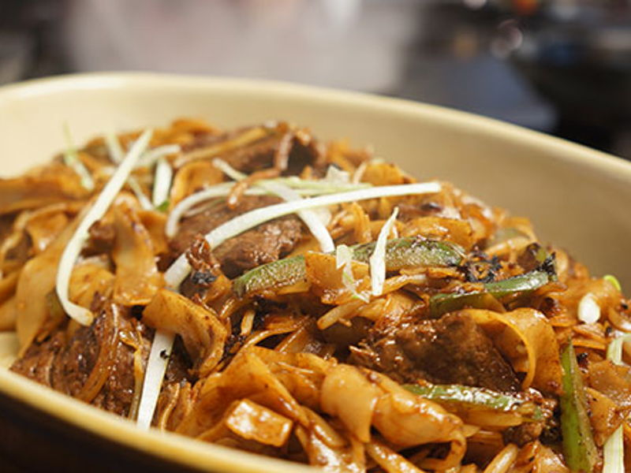

Beef and Seafood Hor Fun
Serves 3-4

Ingredients |
Preperation Time: 20 mins
Cooking Time: 15 mins
|
Beef Marinade
- 1 tbsp light soy sauce
- 1 tbsp oyster sauce
- ½ tbsp sesame oil
- Pinch 5 spice
- Large pinch of sugar
- ½ tbsp corn flour
Other Ingredients
- Fresh / Dried Ho Fun noodles
- 1 onion
- 1 green pepper
- 200g rump steak
- 1 handful beansprouts
- 1 spring onion
- 1 tbsp black pepper sauce
- 1 tbsp oyster sauce
- 1 tbsp dark soy sauce
- Dash Sesame Oil
- The Beef Marinade
|
Instructions
Preparation Method
-
Soak the dry noodles for 8-10 minutes (or until fully lost packet shape
and each noodle strand is separate and softened) and then cool under
cold water
- Finely slice the onion and pepper and place on the same dish
-
Finely slice the spring onions and place on the side of the same dish
- Finely slice the beef and place in a small prep bowl
-
Add the Beef Marinade ingredients to the sliced beef and mix well with
one hand
Cooking Method
-
Place 1-2 tablespoons vegetable oil in the wok on a high heat (smoking
hot wok)
-
Then cook the hor fun for 1 minute and season with a little dark soy
- Turn to medium heat and add the onions
-
Once the onions are slightly softened, push to one side of the wok and
then add the peppers
- Add 1 tbsp oil to the wok and bring back to a high heat
-
Once smoking hot, add the beef and stir fry together for 1 minute on
high heat
- If need be, push aside and add 1 tbsp oil to the base of the wok.
-
Turn the heat back up to high and add the bean sprouts. Stir Fry for 30
seconds
- Push all the ingredients aside and now add the noodles
- Cover the noodles with 1-2 tbsp dark soy sauce
-
Stir the noodles with a spoon whilst shaking the wok back and forth,
until all the noodles are a consistent dark brown colour
- Add the spring onions and a drop of sesame oil
- Serve on a large dish, chilli sauce is a nice accompaniment
NOTES
*Sauté pan: If you happen to own a nonstick or cast-iron pan, I would
recommend it for this recipe. But that said, any pan that you have can
work — you may just have to be a bit more vigilant with stirring so that
the rice and eggs don’t stick.